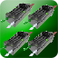

CAN Speed Controller Group

What is it?
A Contoller to Set the follow method of CAN Speed Controllers
Properties
- MasterSpeedController1
- The Master Speed Controller the the following Speed
Controlers will be set to follow.
- SlaveSpeedController1
- The first speed controller that will follow the Master
- SlaveSpeedController2 (Optional)
- The second speed controller that will follow the Master
- SlaveSpeedController2 (Optional)
- The third speed controller that will follow the Master
See Also